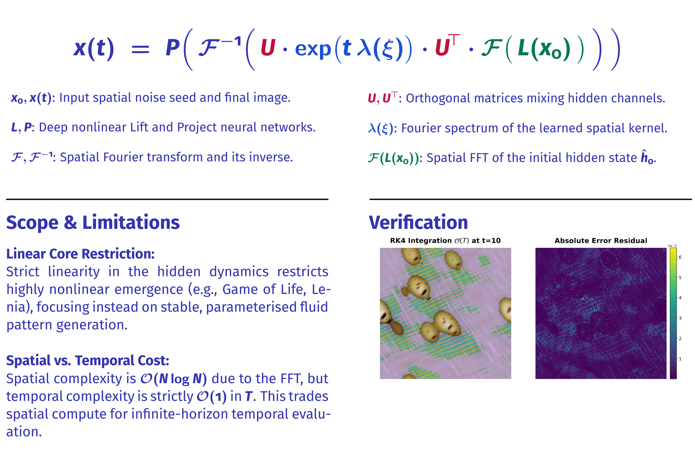

Exploring Spectral Losses, Fourier NCAs, and LTI Dynamics
Standard spatial MSE (L2) loss often leads to incoherent, localized structures.
Fourier loss matches spectral profiles, yielding coherent modal patterns resembling physical Chladni resonance.

Note: Standard spatial deep learning "convolutions" are often cross-correlations.
In the Fourier domain, spatial circular convolution maps to point-wise complex multiplication.
Evaluating linear transformations in closed form generates stable textures, complex visual structures, and predictable physical behaviors.
Integrating spectral methods into artificial life systems offers several useful capabilities: